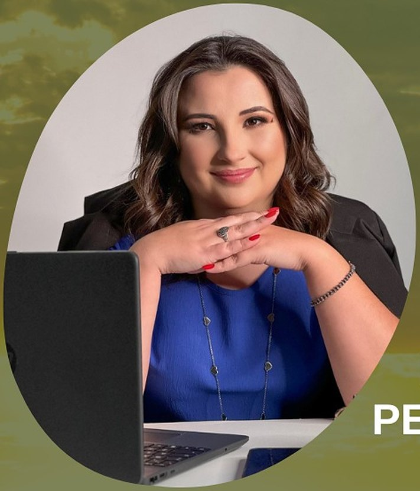
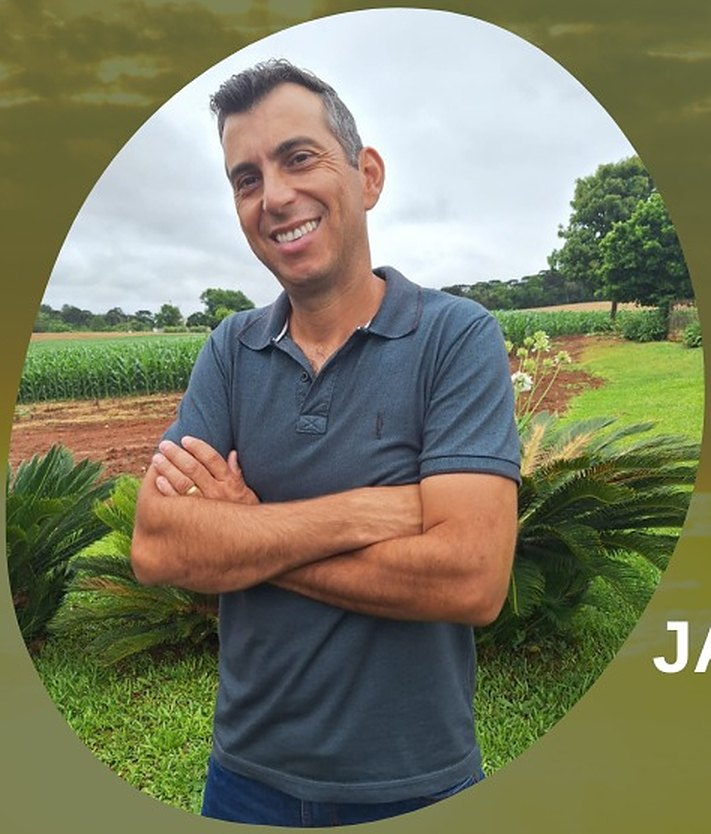
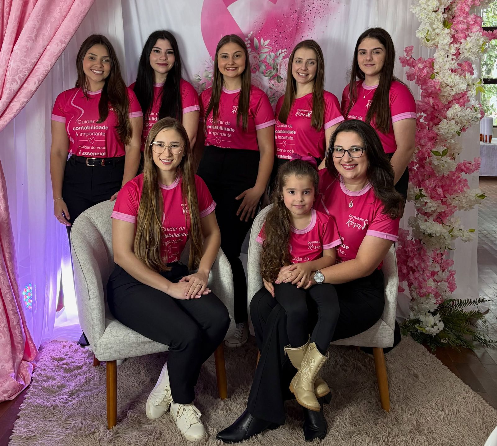

Matriz · desde 2018
Prudentópolis
Rua Coronel João Pedro Martins, 1921, Sala 1
Centro · Prudentópolis · PR
25°12′47″ S · 50°58′40″ O
Ver no mapaContabilidade & Agrimensura · Prudentópolis e Irati
Contabilidade rural, imposto de renda, georreferenciamento e projetos de custeio para produtores rurais. Contabilidade e consultoria tributária para empresas.
25°12′ S · 50°58′ O Prudentópolis25°28′ S · 50°39′ O Irati
Painel do agro
Selic, dólar, o preço que o produtor recebe no Paraná e a previsão do tempo de Prudentópolis e Irati, atualizados todos os dias.
Abrir o painelFontes: Banco Central e Deral/Seab-PR
Por que um escritório do agro
O produtor rural tem obrigações tributárias e fiscais como qualquer empresa: livro caixa digital, imposto de renda e nota fiscal eletrônica. Com acompanhamento especializado, ele cumpre a legislação, organiza os custos e decide com mais segurança.
Não espere receber um comunicado de regularização da Receita Federal.
Serviços
Uma equipe para a propriedade rural e para a empresa. Toque no serviço para falar com a gente.
Agrimensura e georreferenciamento
Medição e georreferenciamento de imóveis rurais, com o apoio técnico para regularizar a terra. A mesma equipe cuida da contabilidade e da documentação da propriedade.
Situações em que o georreferenciamento costuma ser pedido
Quando nos procurar
Malha fina, pendência ou aviso de regularização: conferimos a declaração e organizamos a resposta.
Conversar sobre issoCusteio ou investimento: preparamos o projeto agrícola e a documentação para o banco.
Conversar sobre issoGeorreferenciamento e assessoria cartorária com a mesma equipe que cuida dos seus impostos.
Conversar sobre issoCNPJ do produtor rural e as novas regras da CBS e do IBS: avaliamos o impacto na sua atividade.
Conversar sobre isso

Quem conduz
Contadora · CRC PR-067574/O-0 · Sócia
Economista e contadora, especialista em gestão estratégica de custos e mestre em desenvolvimento comunitário. Foi docente da Unicentro por seis anos e soma 17 anos de experiência no agronegócio.
Técnico em Agropecuária · Sócio
Também com 17 anos de experiência no agronegócio, é o responsável técnico pelo planejamento agrícola e pela agrimensura.
“Cada produtor tem suas particularidades, seus diferentes meios de exploração. Por isso uma boa conversa com a nossa equipe é essencial.”Jackson Ramos Bonetti
Nossa equipe
Você conversa com pessoas, não com um sistema. A equipe da Integraliza recebe produtores e empresários nos escritórios de Prudentópolis e de Irati.

Unidades
Matriz · desde 2018
Rua Coronel João Pedro Martins, 1921, Sala 1
Centro · Prudentópolis · PR
25°12′47″ S · 50°58′40″ O
Ver no mapaUnidade · desde 2024
Rua Piarina Nadal, 60, Sala B
Canisianas · perto da rodoviária · Irati · PR
25°28′01″ S · 50°39′05″ O
Ver no mapaDúvidas
Não encontrou a sua? Pergunte pelo WhatsApp.
A contratação não é obrigatória, mas as obrigações existem: imposto de renda com a atividade rural, notas fiscais da produção e, para parte dos produtores, o Livro Caixa Digital. O acompanhamento reduz o risco de erros e de multas.
É o Livro Caixa Digital do Produtor Rural, entregue à Receita Federal por quem tem receita bruta da atividade rural acima do limite definido pela própria Receita. Verificamos se é o seu caso e cuidamos da escrituração.
Com a reforma tributária, avançam as novas regras da CBS e do IBS, e a inscrição no CNPJ passa a ser exigida dos produtores rurais pessoas físicas abrangidos por elas. Avaliamos como isso se aplica à sua atividade.
Em geral, na compra e venda, na partilha, no desmembramento ou na unificação de imóveis rurais, quando o cartório pede a área certificada no INCRA. Fazemos a medição e acompanhamos o processo.
Sim. Também cuidamos da contabilidade, da consultoria tributária e do imposto de renda de empresas, profissionais liberais e pessoas físicas.
Temos escritórios em Prudentópolis e em Irati e atendemos produtores e empresas da região. O primeiro contato pode ser feito pelo WhatsApp.
Conte o que você produz ou como é a sua empresa. A nossa equipe responde pelo WhatsApp.
Falar no WhatsApp